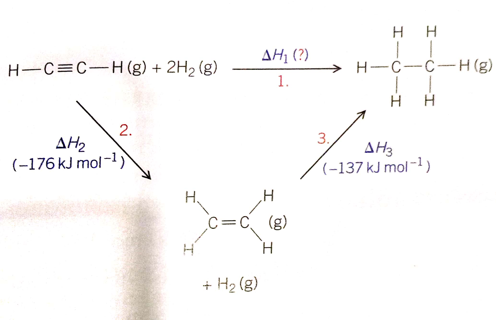

Sometimes, the enthalpy changes of a reaction cannot be measured directly.To find the enthalpy changes for such reactions, chemists sue enthalpy hanges they can measure to measure the ones that they cannot. They do this using Hess's law.
Germain Hess is a Swiss-born russian chemist born in 1802 whose studies of heat in chemical reactions formed the foundation of thermochemistry.
Hess's Law states that:
"The enthalpy change for a chemical reaction is the same, whatever route is taken from reactants to products"
This Law works in hand with the law of conversation of energy which says that energy cannot be created or destroyed but can only be transformed from one form to another. So, if the starting and finishing points of the reactions are
the same which they are, the energy change must be the same. If not energy would have been created or destroyed.
The reaction above shows 2 routes being taken to form ethane. Due to Hess's Law, we can say that the total energy change of the reaction is the same whatever route you take.
Hess's Law means that:
ΔH1 = ΔH2 + ΔH3
Hess's Law can be represented on a diagram called a thermochemical cycle.
